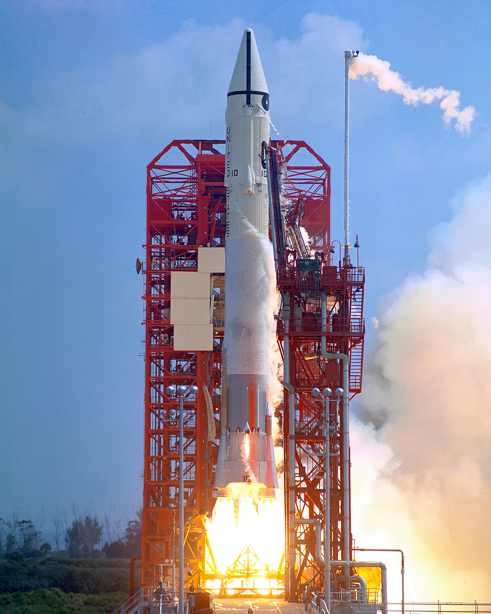

Voyage al conocimiento — una visión panorámica de misiones, tecnología y objetivos actuales.
Desde satélites de órbita baja hasta misiones interplanetarias, la exploración espacial contemporánea combina colaboración internacional, innovación privada y objetivos científicos ambiciosos. La tendencia incluye el regreso a la Luna, la exploración robótica de Marte y la expansión de la infraestructura en órbita.
| Plataforma | Uso principal |
|---|---|
| Satélites LEO | Comunicaciones, observación terrestre |
| Vehículos planetarios | Investigación científica en superficie |
| Tabla orientativa: representa categorías y usos generales. | |
Lecturas recomendadas en línea: Artículos técnicos y misiones de la ESA .
“Explorar el espacio es buscar respuestas a preguntas que aún no sabemos formular.”
Muestras:
- Regolito lunar (polvo y roca)
- Núcleos de hielo en cráteres polares
- Muestras marcianas en contenedores herméticos
Nota técnica: algunas medidas se expresan con notación científica, p. ej. 1.0e3 km para escalas de trayectoria.
Archivos multimedia:

Aspectos éticos y sostenibilidad: la
gestión de residuos orbitales y la preservación de cuerpos
celestes son prioridades emergentes. Ignorar estos retos no es
una opción; la industria trabaja en mitigación y normas.
Símbolos y notación: H2O indica agua; 106 m muestra un millón de metros en notación científica.
Créditos: fuentes científicas y datos técnicos públicos.